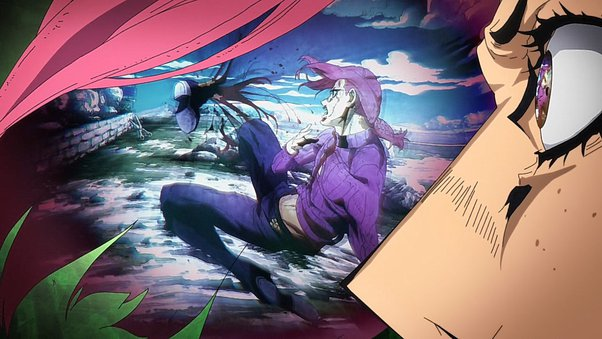
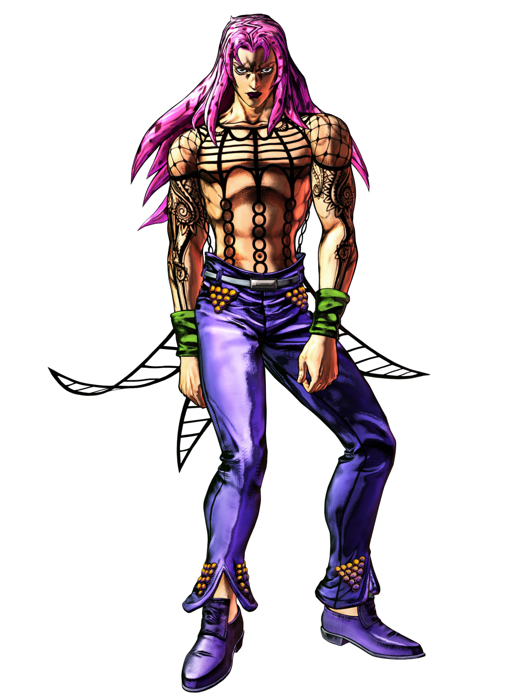

Backstory
Diavolo, also known as the Boss, is the primary antagonist of JoJo's Bizarre Adventure Part 5: Golden Wind. His backstory, intertwined with that of his alter ego, Vinegar Doppio, reveals a complex and enigmatic character. Diavolo's origins are shrouded in mystery, with little known about his early life. He rose to power as the elusive and feared leader of Passione, a powerful mafia organization based in Italy. Under his reign, Passione became the dominant force in the criminal underworld, wielding immense influence and control.However, Diavolo is not merely a ruthless mob boss. He harbors a deep-seated paranoia and an intense desire for secrecy, going to great lengths to conceal his true identity and maintain absolute anonymity. To achieve this, he adopts the persona of Vinegar Doppio, a seemingly harmless and naive individual who serves as his proxy and messenger. Doppio is introduced as a subordinate to Diavolo within Passione, unaware of his true nature. Diavolo communicates with Doppio through hallucinatory visions and alters his appearance to conceal his true identity. Despite this, Doppio exhibits moments of extraordinary intuition and perceptiveness, hinting at the connection between the two personalities.
As the story unfolds, the true nature of Diavolo and Doppio's relationship is gradually revealed. Diavolo's paranoia and obsession with secrecy stem from his fear of being discovered and hunted down by those seeking revenge or power. His past remains largely unknown, but hints of his traumatic upbringing and troubled psyche surface throughout the narrative. Ultimately, Diavolo's backstory serves to underscore his complex and conflicted nature as a character. His dual identity as both a ruthless crime lord and a deeply troubled individual adds depth to his portrayal, making him one of the most compelling antagonists in the JoJo's Bizarre Adventure series.

